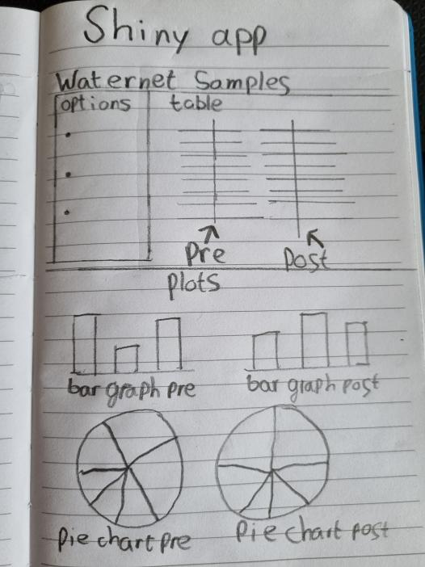

# New skills
Project skills
In the previous chapters I explained the new skills that I have learned during my minor courses. In this chapter I show you the skills that I have learned during my project and tell you my future plans.
The project I have worked on is called the Waternet project, commisioned by Waternet.It’s aim is to get insight in the bacterial composition of Waternet’s water, before and after the filtering steps.
The project was initially handled by a group of microbiology students. Both mock solutions and samples were used for determination, the latter as a control on the determination process.
After concluding they had insufficient resources to properly determine the composition of the samples, the samples were sent to a company that performed whole genome sequencing on them.
This sequencing technique is starting to become a widely used method in clinical diagnostics and general microbial research (Gautam et al. 2019). In the field of microbial water quality testing, detection methods that target nucleic acids have expanded the view on the microbial world (Vierheilig et al. 2015).
As a continuation of this project, a group of data science students (our project group: Shervin, Jari, Irene) were assigned the task of coming up with a way of determining the bacterial composition of both samples, based on the WGS data. We did this by using multiple packages in Rstudio. The main determination package was BLAST+. This software package is a good choice for working with long database sequences(Camacho et al. 2009).We used this package to search genetic sequence data bases with the Bioconductor infrastructure. After that we used kSNP3 SNP detection and phylogenetic analysis of genomes without a reference genome to determine the composition of the Waternet samples (Shea N. Gardner, Slezak, and Hall 2015; Shea N. Gardner and Hall 2013)
For more information about the project visit our GitHub page.
Spend my time comming weeks
Besides the things that I have already learned we will also be taking a look into the future. The goal is to learn a new skill in 4 days of self study, I decided to divide my 4 days in to 2x2 days to learn the following skills:
- Microbiota analysis (link to the workflow)
- Shiny (link to the workflow)
I came up with an assignment to test my newly learned skills, the assignment is to analyse a dataset (this dataset is from my last project) and apply some plots on the samples. After that I make the plots visible in a Shiny app. In the app I will ask for 3 different inputs that the user can adjust.
Microbiota analysis
The goal of this workflow is to learn basic analyses of microbiota data to determine if and how communities differ by variables of interest. This pipeline can be used for any microbiota dataset that has been clustered into operational taxonomic units: OTU’s. All the resultes, code and pipeline are documented in the file: code/Microbiota_analysis.R. In this workflow I will learn about alpha and beta-diversity between and within groups. After that there are different kind of graphs introduced (Abundance plots, heat maps, etc.).
Shiny
The second skill I will learn about is Shiny. Shiny is a package that can be installed in Rstudio, it makes it easy to build interactive web apps straight from Rstudio. To show the plots you created in a project it is important that the figures are interpreted clearly and comprehensibly. Shiny gives you the opportunity to do this in an app with interactive plots. My goal of this workflow is to learn the basics of Shiny and make a small app that shows you the results of my last project in an interactive way. Below I will give you a quick introduction of my last project.
The samples I am going to analyse are the first 10 000 reads of the pre and post sample (this will be ajustable via the interface). I am gonna visualize them in different ways so that the data will be understandable to interpret. If you are working with Shiny it’s a good idea to start with a sketch. In the image below you can see mine.

Shiny app
I decided to put both samples (pre and post) next to eachother in the app, so that you will get a quick overview what is different in each sample. I also made use of tabs so that the table and plots are not on the same page. This makes it easier to view the data. To start the app you need to open the file app/waternet_app.R and press on the button: Run App. The app is best viewed in full screen.